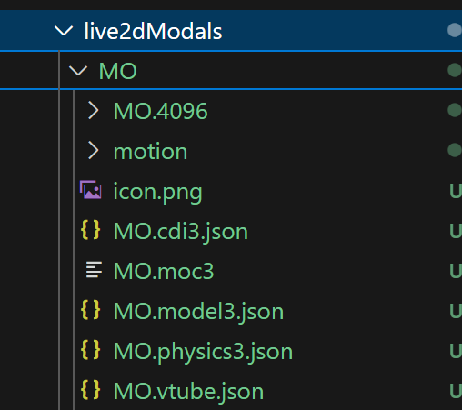
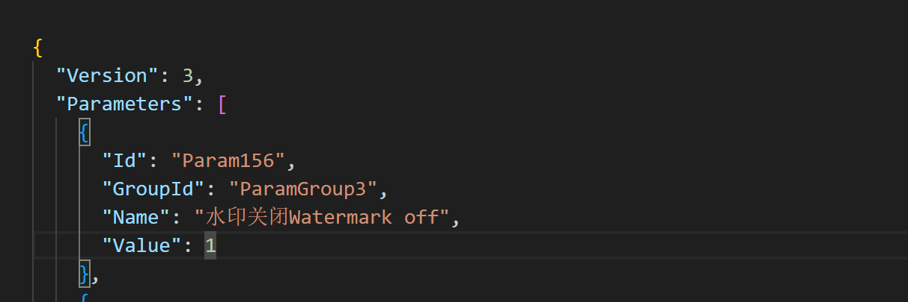
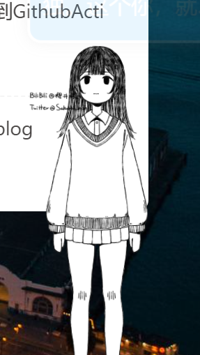

hexo引入live2d看板娘
缘由
在知乎上刷到了一个关于[live2d看板娘](博客园页面的这个姑娘动画是怎么生成的？ - 知乎
https://www.zhihu.com/question/659058271)的提问，提起了我的兴趣。自己也在`bilibili`上随便找了一个模型（为后面的不兼容埋下伏笔）。
踩坑
网上大部分教程都是采用hexo-helper-live2d。经过一系列操作，报错。看控制台的报错是路径拼接有问题。我去逆向，发现配置不对

这个模型原本是被用于虚拟主播使用的公共模型，和hexo-helper-live2d并不兼容。
可替换为oh-my-live2d,无论是版本2，3都支持。
在Hexo项目的根目录中的_config.yml配置
1 | # _config.yml |
细节样式可以写在单独的css文件里，随后在_config.butterfly.yml配置引入
1 | inject: |
还有些什么
因为这个模型原本用于虚拟主播的模型，所以可以在VTUBE上编辑他。但我不知道怎么把他导出，导致现在还有水印😖，所以就这样吧。

我也尝试能否直接在文件中给它直接赋值毕竟只是json,好吧，并不行。所以主要文件在.moc3是吧。

假装高冷所以忽视我吗，哈基MO，你这家伙。。。
本博客所有文章除特别声明外，均采用 CC BY-NC-SA 4.0 许可协议。转载请注明来源 Tomoyo！
相关推荐

2024-12-12
Hexo自动部署到GithubAction
前言之前一直是本地生成静态页面，然后 deploy 到仓库里。但觉得这样不够优雅，并且想要临时修改的话就只能在电脑上修改，其他移动设备上无法临时修改。所以参考https://akilar.top/posts/f752c86d/ Akilar大佬的博客，对我的博客进行修改，也从一个小白的视角进行记录。（这篇文章就是采用新的部署方式） 准备准备两个仓库，一个 private，一个 public。private 用于存储 hexo 源码，（为什么是 private?因为要用到 token 信息）。用于监测 push，然后把生成的静态文件推送到这个 public 的仓库里。 public 起名 istomoyo(你的用户名).github.io。 获取 Token[Github->头像（右上角）->Settings->Developer Settings->Personal access tokens-> 在这 Token(classic) Generate new token 名称随便起，时长选择永久，勾选 workflow 和...

2024-12-03
tomoyo's first blog
tomoyo`s first blog用来写什么？2024-12-3-15:32 Nefu 校园内（是的,bro,这个时候你刚刚考完万恶的系统分析 🙃，周五还有计组，5 章一张没看） 会用来记录 tomoy`s blog 的发展和维护（虽然是静态页面 😂,仓库里是 html,css,js，但以后会添加一些好玩的功能的 🤗,锻炼一下自己贫瘠的脑子。） 由于自身的能力限制，无法添加好看的页面或者功能（比如添加评论？视频？） 而且面临考研，任务艰巨…但万事开头难，先做起来，之后在去慢慢修改喽 😇 2024-12-12 更新了更好的部署方式，源码放在了私有仓库。 添加了搜索功能。 2025-1-161.添加音乐（两首音乐都来自我最喜欢的动漫之中，SWEET DROPS 是白兔糖[白兔玩偶]的 op，Childhood 是乒乓中的一段 bgm😗） 2.样式进行细微调整 2025-2-111.添加看板娘MO（随便选的,免费的）😙 2.使用Giscus添加评论功能
评论